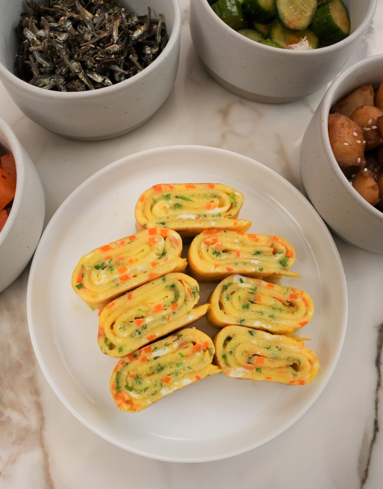

Korean Egg Roll

Description:
Korean Egg Rolls (Gyeran mari), or rolled omelette, is a Korean-style omelette that contains vegetables and is cooked over low heat. They’re an extremely delicious side dish that can be enjoyed for breakfast or with any meal, really!
These Korean egg rolls are a great side dish that do not take long to make. They are also ideal for prepping a day or two ahead of time because they are just as great as a cold side dish!
Ingredients:
- 5 eggs
- 2 tbsp carrot finely minced
- 2 scallions chopped, finely minced
- 1/2 tsp salt
- 1/8 tsp white pepper
Steps:
- In a bowl, crack eggs and mix with salt, white pepper, carrot, and scallion.
- In a nonstick pan, add 1/2 tbsp of oil over low heat and cover the pan with egg mixture.
- Let the eggs set 75% of the way, roll it up with a spatula and push the eggs to the edge of the pan. Add remaining egg mixture to the empty space of the pan.
- Let the second layer set, then continue to roll the omelette onto itself until it forms your egg omelette.
- Remove and let cool, then slice into thick slices and enjoy!